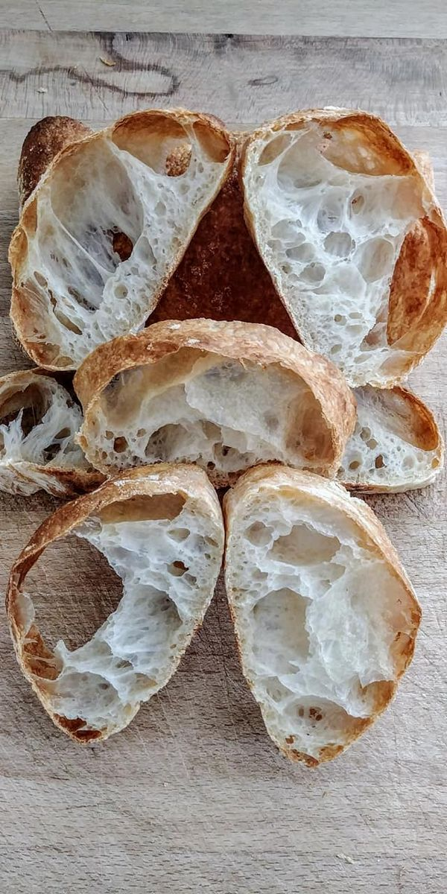

Ciabata

Aprenderemos a realizar este clasico pan italiano
Este pan es relativamente sencillo de realizar, creado por un piloto de carreras italiano se caracteriza,
por tener una alta tasa de hidratacion y una forma indefinida que queda a la libertad del panadero
Ingredientes
- 1 kg de Harina
- 750ml de Agua
- 60ml de aceite de oliva extra virgen
- 25gr de sal
- 20gr de levadura
- 300gr de masa madre
- 300gr de biga
La biga es un prefermento italiano hidratado al 40% con muy poca adicion de levadura y se
deja reposar a lo menos 4hr antes de mezclar la masa
- Mezclar la biga con la masa madre y disolver con agua hasta formar una masa
- añadir el resto del agua y la harina y mezclar hasta formar una masa
- integrar la levadura y amasar por 10 minutos
- Mezclar la sal y poco a poco añadir el aceite de oliva a la masa
- integrar todos los ingredientes hasta que quede una masa homogenea
- dejar reposar 1hr 1/2 en bloque
- estirar la masa en un meson con harina y dejar reposar 15 minutos
- desgasificar la masa dandole forma rectangular y reposar 15 minutos más
- dividir en la forma deseada y hornear por 25' a 250-270 grados celsius